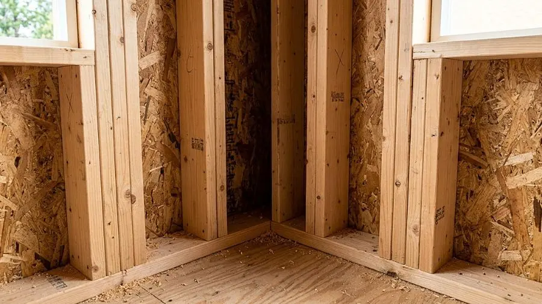
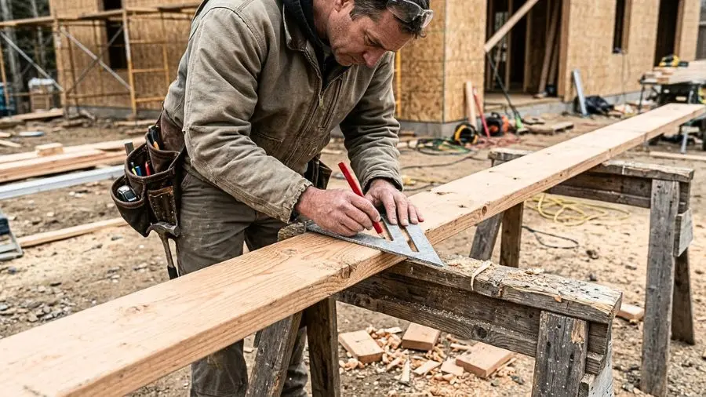

Framing & Roof Calc: Tape 1/16
Job-site engineering instrument with dual units (US Imperial fractions ↔ Metric). Features visual 1/16" tape zoom with red needle, 1-tap fractions, voice readout on ladders, roof pitch & rafters (Common, Hip/Valley, Jack), IRC stair stringers, raked wall studs, and concrete cubic yards.
✓ Free on Android • ✓ 100% Offline • ✓ Verified Calculations
🪚 Live Field Estimator: Common Rafter Pitch & IRC Stair Code
Trigonometric BlueprintTest roof rafters and stair stringers with instant building code validation:
Stair IRC Code Check: 9 Risers @ 7-3/4" — ✅ PASSES IRC R311.7.5 CODE (≤7-3/4")
Latest Field Guides & Technical Manuals
Stair Stringer Layout & The 1-1/2" Bottom Drop Mistake (IRC R311.7.5 Code Guide)
Master stair stringer layout from scratch: why forgetting the bottom drop fails IRC R311.7.5.1 (3/8" max riser variance), 5-inch minimum 2x12 throat depth, framing square setup, and tread/riser code limits.
Read Full Guide & Calculator →
California Corner vs. 3-Stud Corner Framing: Save $400 in Lumber & Eliminate Cold Spots
Why modern production framers abandoned traditional solid 3-stud corners. Learn how California framing saves 30% corner lumber, speeds up drywall backing, and eliminates frozen room corners.
Read Full Guide & Calculator →The Birdsmouth Cut: Seat Cut, Heel Cut & Building Code Rules
Master The Birdsmouth Cut: Seat Cut, Heel Cut & Building Code Rules. Step-by-step layout with Speed Square, 1/16" tape fractions, IRC building codes, and material optimization.
Read Full Guide & Calculator →Roof Pitch Explained (X/12): How to Measure & Choose the Right Slope
Master Roof Pitch Explained (X/12): How to Measure & Choose the Right Slope. Step-by-step layout with Speed Square, 1/16" tape fractions, IRC building codes, and material optimization.
Read Full Guide & Calculator →Master the 1/16'' Tape Measure: Read Fractions Like a Pro Framer
Master Master the 1/16'' Tape Measure: Read Fractions Like a Pro Framer. Step-by-step layout with Speed Square, 1/16" tape fractions, IRC building codes, and material optimization.
Read Full Guide & Calculator →
Common Rafter Layout: From Run & Rise to Exact Plumb Cuts
Master Common Rafter Layout: From Run & Rise to Exact Plumb Cuts. Step-by-step layout with Speed Square, 1/16" tape fractions, IRC building codes, and material optimization.
Read Full Guide & Calculator →